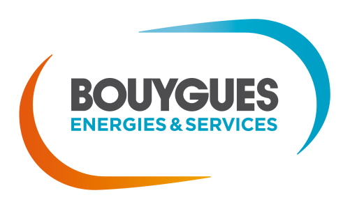

Développeur informatique alternant - Bouygues Énergies & Services, Le Bourget-du-Lac (septembre 2025 à août 2026, 1 an)
Mission :
-
Développement d'un générateur de fichiers (.udt, .db, .awl) pour les automaticiens à partir des listes de termes dans le cadre du projet DIRMC.
Travaux réalisés :
-
Analyse des données et des livrables demandés
-
Mise en place d'une base de données SQLite
-
Développement de l'application (récupération de la liste de termes, ajout des données dans la base de données, génération des livrables)
Développeur stagiaire - ECM Technologie, Grenoble (avril 2025 à juin 2025, 3 mois)
Mission :
-
Développement d'une application générant des déclarations de DEB (déclarations d'échange de biens).
Travaux réalisés :
-
Analyse du cahier des charges
-
Mise en place d'une base de données HFSQL
-
Développement des fonctionnalités de l'application (création et gestion des sociétés, génération des DEB, Visualisation des DEB)